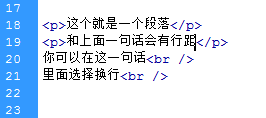
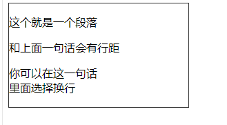

<P>标签它是一个段落标签，它和<br>标签不一样。会自行起一行段落，并且可以作为一个盒子来使用。可以单独定义它。
比如下图：
<p>这个就是一个段落</p>
<p>和上面一句话会有行距</p>
你可以在这一句话<br />
里面选择换行<br />


所以当你不想要折行新起一个段落的话，你就可以选择用这种<br />标签，<br />标签在段落中只是换行的作用，并且不会出现句子与句子之间会有行距的情况。